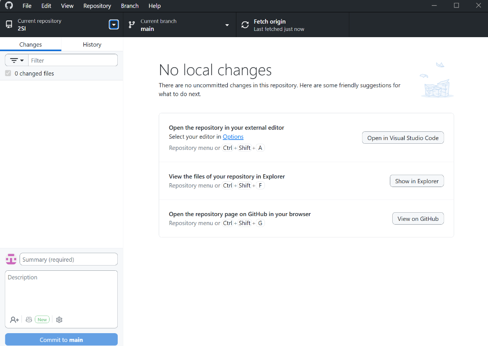

Découverte visuelle des concepts fondamentaux du versionnement moderne (Working Tree, Staging Area, Local Repo, Remote) grâce au client graphique officiel GitHub Desktop, configuration du .gitignore (spécial Proteus / MicroPython / C Arduino), gestion visuelle des branches, ouverture de votre première Pull Request (PR) et publication de votre dépôt portfolio sur GitHub.com.
| Code BO | Compétence BTS CIEL | Mise en situation concrète durant ce TP |
|---|---|---|
| C08 | Gérer le cycle de vie du code source | Utiliser le gestionnaire de versions (Git) via client graphique et CLI : suivi d'historique, retours en arrière, exclusion des fichiers compilés / temporaires via .gitignore. |
| C01 | Travailler en équipe & Communiquer | Partager son travail sur une forge collaborative (GitHub), rédiger des messages de commit explicites, isoler des développements sur des branches et soumettre une Pull Request avec revue de code. |
.gitignore BTS CIELCochez les technologies de vos projets :
projet_final_v2_modifie_paul.zip.En BTS CIEL, vos projets mêlent électronique (schémas Proteus, routages PCB) et informatique (firmwares C/C++, scripts Python, HTML/CSS). Sans outil adapté, on observe classiquement l'écrasement involontaire du code du binôme, l'incapacité de savoir qui a modifié quelle ligne, et la perte définitive des fichiers en cas de crash système.
La solution universelle : Git & GitHub Desktop :
Git prend des « instantanés » (commits) horodatés et signés de votre projet. Avec GitHub Desktop, chaque changement de ligne apparaît sous vos yeux en vert (+) ou rouge (-), chaque branche est visualisable d'un clic, et la publication sur le cloud se fait sans taper de lignes de commande opaques.
prenom-nom, vdupont-ciel). Évitez les pseudonymes de jeux vidéo !GitHub Desktop élimine le principal obstacle des débutants : le rejet des mots de passe en ligne de commande depuis août 2021. Grâce à GitHub Desktop, la connexion se fait automatiquement via votre navigateur web en un seul clic !
Ctrl + ,).@________________________https://github.com/________________________
.gitignore (spécial BTS CIEL).Ctrl + N).bts-ciel-portfolioPortfolio de projets techniques BTS CIEL 1ère AnnéeC:ts_ciel (ou votre dossier de travail habituel)Prenez le temps d'observer attentivement la fenêtre de GitHub Desktop. Elle concrétise visuellement toute l'architecture de Git :

Current repository), la branche de travail (Current branch : main), et le bouton de synchronisation (Fetch / Push origin).git add !Summary (required) (titre de la modification) et cliquez sur Commit to main pour figer l'instantané dans l'historique local.Ctrl+Shift+A), Show in Explorer (Ctrl+Shift+F), View on GitHub (Ctrl+Shift+G).git log. Vous y retrouvez l'arbre complet des versions, leurs auteurs et leurs empreintes SHA-1.Ce schéma vectoriel montre comment les composants graphiques de GitHub Desktop correspondent aux zones internes de Git :
.gitignore en BTS CIEL.gitignore est VITAL en électronique et informatique ?Lorsque vous compilez du code en C (Arduino) ou simulez un schéma (Proteus 8), les logiciels créent des fichiers temporaires volumineux :
*.pdsbak, *.tmp et des caches de simulation qui polluent inutilement le dépôt.build/ contenant les exécutables machine *.hex, *.elf, *.bin qui ne doivent jamais être versionnés.__pycache__/.
Comment créer et configurer le .gitignore :
Ctrl + Shift + A)..gitignore (avec le point au début).Ctrl + S) :# ==========================================
# Fichier .gitignore pour BTS CIEL
# ==========================================
# 1. Proteus ISIS / ARES (Fichiers de sauvegarde et temporaires)
*.pdsbak
*.tmp
*.bak
*.workspace.user
# 2. Arduino & Compilateurs Embarqués (Binaires de compilation)
build/
*.hex
*.elf
*.bin
*.o
*.d
# 3. Python & MicroPython
__pycache__/
*.pyc
*.pyo
venv/
.env
# 4. Fichiers système & Éditeurs
Thumbs.db
Desktop.ini
.DS_Store
.vscode/.history/
Observez immédiatement le résultat dans GitHub Desktop :
Revenez sur la fenêtre de GitHub Desktop. Dans l'onglet Changes, le fichier .gitignore est apparu automatiquement avec un carré vert +. GitHub Desktop surveille en temps réel les fichiers sur votre disque dur !
Dans VS Code, ouvrez le fichier README.md et complétez-le :
# Mon Portfolio BTS CIEL 1ère Année
Bienvenue sur le dépôt de mes réalisations techniques en BTS CIEL (Cybersécurité, Informatique et réseaux, Électronique).
## Projets Réalisés :
- TP 7 : Système de Sécurité Logique Câblée (Analog Discovery 3 & MicroPython)
- TP 8 : Régulation PWM 555 & Surveillance Bus SPI (AD3 & Raspberry Pi Pico)
- TP 9 : Transition Firmware C Arduino Nano (FSM, Pointeurs, Registres ATmega328P)Sauvegardez dans VS Code et retournez dans GitHub Desktop :
.gitignore et README.md.README.md : le panneau de droite affiche le Diff avec les lignes ajoutées en vert.feat: initialisation du portfolio et configuration du gitignore| Action dans GitHub Desktop | Commande Git CLI équivalente | Ce qui se passe sous le capot |
|---|---|---|
| GUI Détection automatique dans "Changes" | CLI git status |
Git compare les fichiers du disque avec le dernier instantané. |
| GUI Cocher la case en face du fichier | CLI git add .gitignore README.md |
Les fichiers passent du Working Tree vers la Staging Area (Index). |
| GUI Saisir le Summary & cliquer "Commit to main" | CLI git commit -m "feat: ..." |
Un instantané immuable est enregistré dans le dépôt local (.git). |
| GUI Consulter l'onglet "History" | CLI git log --oneline --graph |
Lecture de la chaîne cryptographique des commits. |
Hash SHA-1 : [________] Message : __________________________________________________
origin) et de synchronisation (push / pull).README.md.Actuellement, votre dépôt n'existe que sur le disque dur de votre PC de TP. Si le disque tombe en panne, tout est perdu ! Nous allons le sauvegarder sur le cloud GitHub :
bts-ciel-portfolioPortfolio de projets techniques BTS CIEL 1ère Année
Que s'est-il passé en quelques secondes ?
GitHub Desktop a communiqué avec l'API GitHub, créé le dépôt distant vierge, configuré l'alias origin, et exécuté git push -u origin main de manière totalement sécurisée via votre session connectée !
Utilisez le raccourci intégré de GitHub Desktop :
Ctrl + Shift + G).https://github.com/VOTRE_USERNAME/bts-ciel-portfolio.README.md est automatiquement converti en page web HTML élégante, votre .gitignore est en place, et l'historique affiche "2 commits" !| Action dans GitHub Desktop | Commande Git CLI équivalente | Ce qui se passe sous le capot |
|---|---|---|
| GUI Cliquer sur "Publish repository" | CLI git remote add origin https://...git push -u origin main |
Liaison du dépôt local à l'URL distante et transfert des commits vers le serveur cloud. |
GUI Raccourci Ctrl + Shift + G |
CLI (Navigateur web) | Ouvre la page du dépôt distant sur la forge GitHub.com. |
| GUI Bouton "Fetch origin" | CLI git fetch origin |
Interroge le cloud pour savoir si un collègue a poussé des nouveautés. |
https://github.com/________________________/bts-ciel-portfolio
main.
En entreprise, la branche main représente le code de production : le firmware déployé sur les cartes électroniques chez les clients. Si un développeur pousse directement une modification contenant un bug de syntaxe sur main, c'est l'ensemble de l'équipe et des systèmes déployés qui sont bloqués !
La règle fondamentale de l'ingénierie collaborative est donc : toute nouvelle fonctionnalité ou correction se fait dans une branche isolée, puis est relue via une Pull Request avant d'intégrer main.
feature/ajout-projet-tp.main, puis cliquez sur Create branch.Current branch : feature/ajout-projet-tp !
Cliquez sur Open in Visual Studio Code dans GitHub Desktop (ou Ctrl + Shift + A) :
firmware_tp9/ dans votre projet.main_tp9.c :// ==========================================================
// BTS CIEL 1ère Année - TP 9 : Machine à États & Registres AVR
// Auteur : Vincent DUPONT
// Date : Novembre 2026
// ==========================================================
#include <stdint.h>
typedef enum {
ETAT_VEILLE = 0,
ETAT_ACQUISITION,
ETAT_ALARME
} EtatSysteme_t;
EtatSysteme_t etatCourant = ETAT_VEILLE;
void initialiserSysteme(void) {
// Configuration directe des registres AVR ATmega328P
// PB5 (LED D13) configurée en sortie numérique
DDRB |= (1 << PB5);
}
int main(void) {
initialiserSysteme();
while (1) {
// Boucle principale FSM
}
return 0;
}
3. Modifiez également votre README.md pour documenter cette nouvelle réalisation :
### 📁 Module Ajouté : TP 9 - Firmware C & Machine à États (FSM)
- **Objectif :** Implémentation d'une machine à états et manipulation directe des registres DDRB / PORTB sur ATmega328P.
- **Fichier source :** `firmware_tp9/main_tp9.c`
- **Validation :** Conforme aux spécifications du bureau d'études.feat(firmware): ajout du code source C du TP9 et documentation
Dès que votre branche est publiée, GitHub Desktop affiche un grand bouton bleu au centre de la fenêtre :
Create Pull Request !
base: main ← compare: feature/ajout-projet-tp.feat: intégration du firmware C du TP9.
Votre code est maintenant fusionné dans main sur GitHub Cloud. Il ne reste plus qu'à synchroniser votre machine locale :
| Action dans GitHub Desktop | Commande Git CLI équivalente | Ce qui se passe sous le capot |
|---|---|---|
| GUI Current branch > New branch | CLI git switch -c feature/ajout-projet-tp |
Crée un nouveau pointeur de branche et déplace HEAD. |
| GUI Bouton "Publish branch" | CLI git push -u origin feature/... |
Publie la branche isolée sur GitHub Cloud sans toucher à main. |
| GUI Bouton "Create Pull Request" | CLI gh pr create (via GitHub CLI) |
Ouvre la demande formelle de fusion et de revue de code par les pairs. |
| GUI Revenir sur main & cliquer "Pull origin" | CLI git switch maingit pull origin main |
Met à jour la branche main locale avec les commits fusionnés. |
URL de la PR : https://github.com/________________________/bts-ciel-portfolio/pull/1[________]
Répondez avec rigueur aux questions suivantes. Elles mettent en lumière la correspondance directe entre les mécanismes visuels de GitHub Desktop et les principes de Git en entreprise.
git add)Dans GitHub Desktop, l'onglet Changes permet de cocher ou décocher chaque fichier individuellement avant de cliquer sur "Commit". À quelle zone fondamentale de Git correspond cette liste cochée ? Pourquoi est-il capital de ne PAS tout cocher aveuglément lorsqu'on travaille sur plusieurs fichiers à la fois ?
Un étudiant clique sur le bouton bleu "Commit to main" dans GitHub Desktop, puis éteint son PC de TP et rentre chez lui. Lorsqu'il se connecte sur son compte GitHub depuis chez lui, son nouveau fichier n'apparaît pas. Pourquoi ? Quelle action indispensable a-t-il oublié d'effectuer dans GitHub Desktop ?
.gitignore sur l'Interface de GitHub Desktop
Que se passe-t-il dans l'onglet Changes de GitHub Desktop si vous enregistrez un schéma sous Proteus 8 (générant des fichiers *.pdsbak) SANS avoir configuré de .gitignore ? Quels sont les risques si ces fichiers temporaires sont accidentellement commités et poussés ?
Pourquoi GitHub Desktop vous propose-t-il automatiquement d'ouvrir une Pull Request sur GitHub.com dès que vous publiez une branche de feature, au lieu de fusionner directement en local ? En quoi l'affichage du "Diff" (lignes vertes/rouges) est-il la garantie de la qualité logicielle en entreprise ?
Bien que GitHub Desktop rende le versionnement visuel et intuitif, pourquoi un technicien supérieur ou ingénieur en BTS CIEL doit-il également connaître les commandes de base en terminal (git status, git add, git commit, git push) ? Citez deux cas concrets où l'interface graphique ne peut pas être utilisée.
| Module / Critère | Indicateurs de Réussite & Compétences Visées | Barème | Note Attribuée |
|---|---|---|---|
| Module 0 : Compte & Connexion Desktop | Compte GitHub créé avec identifiant professionnel et 2FA actif. Connexion réussie dans GitHub Desktop (nom et email Git configurés). | / 3 pts | ______ / 3 |
Module 1 : Dépôt Local & .gitignore |
Dépôt bts-ciel-portfolio initialisé dans GitHub Desktop. Fichier .gitignore exhaustif (Proteus, Arduino, Python). Premier commit atomique réalisé avec message explicite.
|
/ 5 pts | ______ / 5 |
| Module 2 : Publication Cloud |
Dépôt publié en mode public sur GitHub Cloud. Visualisation réussie sur GitHub.com (README.md formaté). Compréhension de la relation local/distant.
|
/ 4 pts | ______ / 4 |
| Module 3 : Branches & Pull Request |
Branche créée et gérée dans GitHub Desktop. Code source réel ajouté et documenté. Pull Request ouverte, relue, fusionnée (Merge) et rapatriée sur main en local.
|
/ 5 pts | ______ / 5 |
| Module 4 : Réponses aux Questions | Justesse technique et rigueur d'analyse des 5 questions (rôle de la Staging Area, commit vs push, .gitignore, intérêt de la PR, complémentarité GUI/CLI). | / 3 pts | ______ / 3 |
| NOTE FINALE DU TP INITIATION GIT & GITHUB : | / 20 pts | ______ / 20 | |